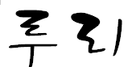

Ruri
프로젝트
- 이 과제의 전체적인 목표는 제 인생에서 중요했던 것이 무엇인지 알려드리는 것입니다.
- 서론에서는 제가 무엇을 가장 중요하게 여기고 있으며, 어떤 방향으로 나아가고 있는지를 설명하기 위해 제 꿈과 동기, 목표를 적었습니다.
주제에 있는 인공지능 프로그래머는 제 장래희망이고, 좌측 상단에 적혀 있는 Ruri는 제가 만들고 있는 인공지능의 이름입니다.
- 성장 과정과 중요한 사회 이슈에서는 제 유년 시절부터 시작하여 터닝 포인트가 되었던 사건들을 차례대로 기술하였습니다.
- 제가 가고 싶은 기업은 삼성이며, 삼성이 현재 출시하고 더욱 발전시키고 있는 빅스비를 함께 만들고 싶다는 생각을 했습니다.
모든 사람이 접근하기 쉽고 간편한 사용 방법을 추구한다는 점에서 저의 마음을 끌었습니다.
- 현재 저는 따로 인공지능을 만들고 있으며, 이를 더욱 발전시키기 위해 고민하고 있습니다.
보다 효율적인 방법으로 빠르게 발전하기 위해 친구들과 함께 학부 융합 프로그램에 출품하기도 했습니다.
학부 융합을 진행하며 얻은 경험과 지식은 저의 일부가 되어 역량을 더욱 강화시켜 주었습니다.
- 처음에는 웹사이트 만들기 프로젝트를 진행하면서 어려운 점이 많았습니다.
- 특히, 처음 구도를 잡는 과정에서 다른 사이트들을 참고했지만, 저의 실력이 부족하다는 것을 많이 느꼈습니다.
따라서 느린 속도긴 해도 조금씩 시작하여 복잡하고 어렵게 만들기보다는 사람이 읽기 쉽고 눈에 편한 웹사이트를 만들기로 했습니다.
각 부분을 따로 만들어야 했기에 하나를 건드리면 다른 것들이 망가지는 어려움이 있었고, 새로운 효과를 어디에 어떻게 넣어야 할지 고민이 많았습니다.
전체적으로 큰 틀을 만들어 보았지만 너무나도 조잡해보이는 것이 제 마음에 걸렸고, 보다 퀄리티 있는 웹사이트를 만들기 위해 스크롤을 내릴 때 텍스트가 서서히 나타나는 효과를 넣기로 결정하였습니다.
- 이 과정에서 많은 어려움을 겪었고, 구글링과 챗GPT를 통해 코드를 구축하여 제 코드에 넣는 과정을 반복한 끝에 그럴듯한 효과를 구현하는 데 성공했습니다.